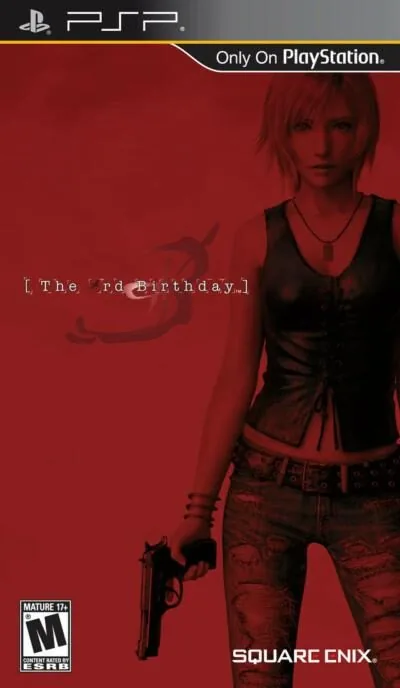
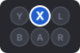
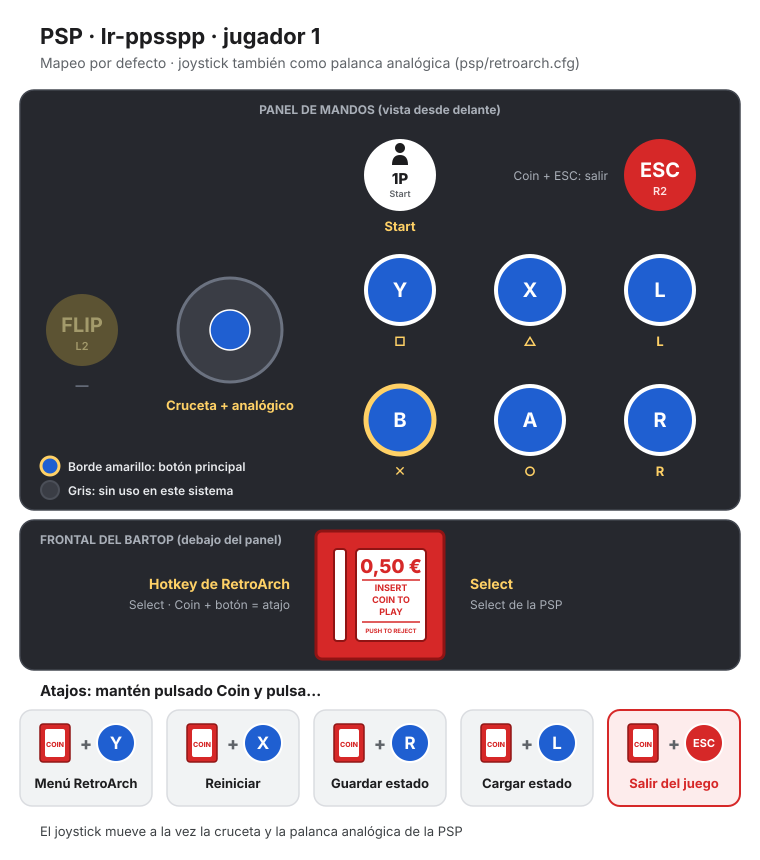

PSP
The 3rd Birthday
- Año: 2011
- Desarrollador: Hexa Drive
- Género: Acción
Tercer Parasite Eve (Square Enix, 2010): unas criaturas, los Twisted, arrasan Nueva York, y Aya Brea, sin memoria, viaja al pasado saltando de un cuerpo a otro con el Overdive para cambiar los hechos. Disparos en tercera persona por episodios.
Controles
que Aya se mueva con el joystick. Según las reseñas: R apunta solo al enemigo más cercano (mantener: apuntar y disparar), X (△) hace el Overdive (saltar a otro cuerpo; mantener: moverse por el mapa), y cuando sale un triángulo sobre el enemigo, X lo remata; la cruceta mueve la cámara (⚠️ en la bartop el joystick hace las dos cosas). Falta saber qué botón dispara. ¿Va fluido?
Mando de PSP. El joystick mueve la cruceta y también la palanca analógica, porque muchos juegos de PSP solo se mueven con ella.
| Panel | Juego |
|---|---|
 | ✕ |
 | ○ |
 | R |
 | □ |
 | △ |
 | L |
 | Start |
 | Select |
+  | Salir del juego |
El panel en PSP



Argumento
Recopilado de internet (2026-11-04). Lo marcado con ⚠️ no está probado en la bartop.
Tercer juego de la serie Parasite Eve (2010). La historia se cuenta por episodios, como una serie, y no en orden. En la Nochebuena de 2012 aparecen en Nueva York unas criaturas monstruosas, las Babel, que con sus engendros, los Twisted, arrasan la ciudad. Un año después se ha formado un equipo de investigación, el CTI, y en él está Aya Brea, encontrada en 2010 frente a la catedral de St. Thomson con amnesia y la personalidad cambiada (⚠️ la descripción de la ficha dice St. Patrick, y que apareció vestida de novia y empapada en sangre).
El jefe del CTI, el Dr. Hyde Bohr, descubre que Aya puede mandar su alma de un cuerpo a otro, incluso a través del tiempo: el Overdive. Con una máquina, la mandan al pasado para cambiar los hechos. En cada misión se enfrenta a unos Twisted conscientes, los High Ones; uno de ellos es Kyle Madigan, su prometido. Al vencerlos recupera recuerdos, también de su hermana adoptiva, Eve.
Cambiar el pasado altera el futuro: tras su primera misión, Gabrielle, que había muerto en un entrenamiento, está viva… pero ahora ha muerto Thelonious Cray, y hay que volver a salvarle. Cuando Kyle destruye la sede del CTI y el dispositivo de Overdive, Aya sigue luchando en el presente con ayuda de Kunihiko Maeda, que descubre que el Gran Babel que construye Bohr es un enorme sistema de Overdive.
Final: Bohr resulta ser un High One que quiere volver al «Tiempo Cero». Allí se descubre la verdad: en 2010, el día de la boda de Aya y Kyle en la catedral, un equipo de asalto mató a Aya; Eve intentó salvarla metiendo su conciencia en el cuerpo de Aya, y de ahí nació todo. La «Aya» del juego era en realidad Eve. Aya, renacida, mata a Bohr, y le pide a Eve que la dispare para que nunca existan los Twisted; Eve cambia de cuerpo con ella antes y crea una línea temporal nueva. Tras los créditos, cuatro años después, una mujer parecida a Aya le desea a Eve un «feliz cuarto cumpleaños».
Tras los créditos (pasándose el juego dos veces), Eve, en el cuerpo de Aya, pasea por Nueva York en Navidad; una mujer con el pelo como Aya le desea feliz cumpleaños y desaparece.
Personajes
- Aya Brea: casi cuarenta años, pero aspecto de 25 por sus mitocondrias avanzadas; por eso es la única que puede usar el Overdive. Sin memoria, más vulnerable que en los Parasite Eve anteriores. Voz inglesa de Yvonne Strahovski.
- Eve Brea: clon de Aya adoptada como hermana tras Parasite Eve 2; desapareció con Kyle.
- Kyle Madigan: la pareja de Aya desde el final de Parasite Eve 2.
- Kunihiko Maeda: investigador de las mitocondrias y viejo amigo de Aya, con un refugio en un almacén.
- Hyde Bohr: jefe de la división Overdive del CTI, frío y perfeccionista; el enemigo principal.
- Thelonious Cray: exmilitar, entrenador de Aya (enseña los controles).
- Dr. Blank: jefe de informática; le llaman así porque dejó en blanco su ficha.
- Hunter «Boss» Owen (Karud en otras versiones): director del CTI, desconfía de Aya.
- Gabrielle Monsigny: francotiradora que entrena a Aya.
- Emily Jefferson: la mejor amiga de Eve; le da a Aya un mensaje antes de convertirse en Twisted.
Fuentes
Wikipedia en inglés · descripción de la ficha (gamelist)
Jugabilidad
Recopilado de internet (2026-11-04). Lo marcado con ⚠️ no está probado en la bartop.
- Disparos en tercera persona con rol, de HexaDrive y Square Enix, por misiones (episodios). Square Enix lo llamó «rol de acción cinematográfico»; su director, Hajime Tabata, quería que juego e historia se mezclaran gracias al Overdive. Cámara por encima del hombro. Entre misiones se vuelve a la base del CTI para comprar y mejorar armas y guardar.
- Puntería: manteniendo un botón, Aya apunta sola a un enemigo y dispara. Cubrirse o estar quieta fuera del combate recupera vida.
- Overdive: saltar al cuerpo de un soldado aliado, con su vida, su posición y su arma; si te quedas sin cuerpos a los que saltar, mueres. También sirve para atacar: tras castigar a un enemigo aparece un triángulo sobre él, y entonces el Overdive le hace mucho daño.
- Modo Liberación: al llenar la barra de energía, Aya se mueve a toda velocidad un rato.
- Soldados aliados: se les puede mandar cubrir, atacar o quedarse a cubierto; si mueren, no vuelven.
- Subir de nivel recupera vida y la aumenta; las armas también suben con el uso. Los clips OE, en una cuadrícula de 3×3, dan mejoras y habilidades.
- Nota de cada misión, que da puntos para mejorar armas.
Botones según las guías (⚠️ por confirmar)
| Mando de PSP | Panel | Acción |
|---|---|---|
| Palanca |  | Mover a Aya |
| Cruceta | ⚠️ | Mover la cámara (en la bartop, el joystick hace cruceta y palanca a la vez) |
| R | | Apuntar al enemigo más cercano |
| △ | Overdive: saltar a otro soldado (mantener: moverse por el campo) · rematar cuando sale el triángulo |
- ⚠️ No he encontrado qué botón dispara.
Fuentes
Guía de niveles
Recopilado de internet (2026-11-04). Lo marcado con ⚠️ no está probado en la bartop.
| Episodio | Nombre |
|---|---|
| 0 | Sacrifice |
| 1 | A Brave New World |
| 2 | The Lost Soul |
| 3 | Against the World |
| 4 | The Moment of Truth |
| 5 | Counter Attack |
| Último | Eternity |
- Nombres: los de los capítulos del vídeo.
Fuentes
Objetos
Recopilado de internet (2026-11-04). Lo marcado con ⚠️ no está probado en la bartop.
| Objeto | Qué hace |
|---|---|
| Granadas | Se recogen en las misiones |
| Botiquín | Recupera vida |
| Armas | Pistolas, rifles de asalto, escopetas…; se compran y se mejoran en la base |
| Clip OE | Se pone en la cuadrícula de 3×3 para mejorar a Aya |
Fuentes
Trucos y secretos
Recopilado de internet (2026-11-04). Lo marcado con ⚠️ no está probado en la bartop.
- Puntos de recompensa (Bounty Points): según la nota de cada misión; sirven para mejorar armas.
- ⚠️ No he encontrado trucos.
Fuentes
Longplay

Partida completa de la versión PSP (313 min), de Levan: Parasite Eve - The 3rd Birthday - LongPlay 4K.
Pulsa el minuto de un nivel para ver el vídeo desde ese punto.